Fluxion Harness 总体设计配图预览
按正文阅读宽度展示，图名按文字描述引用。源文件与生成脚本见 01-总体设计图/。
系统组成与边界
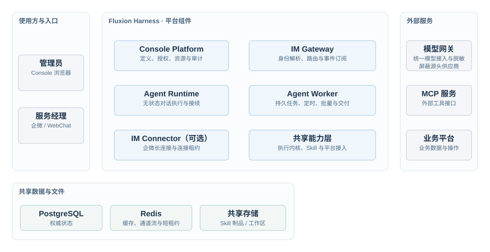
左侧是使用方与入口，中间是平台组件，右侧是外部服务，下方是共享数据与文件。Console 负责管理面；Gateway 负责请求接入；Connector 负责渠道长连接；Runtime 与 Worker 负责执行；共享能力层为执行面提供 Skill 与平台接入；模型网关是我们对接的外部模型供应入口，统一做脱敏与还原，并屏蔽源头模型供应商。
逻辑分层
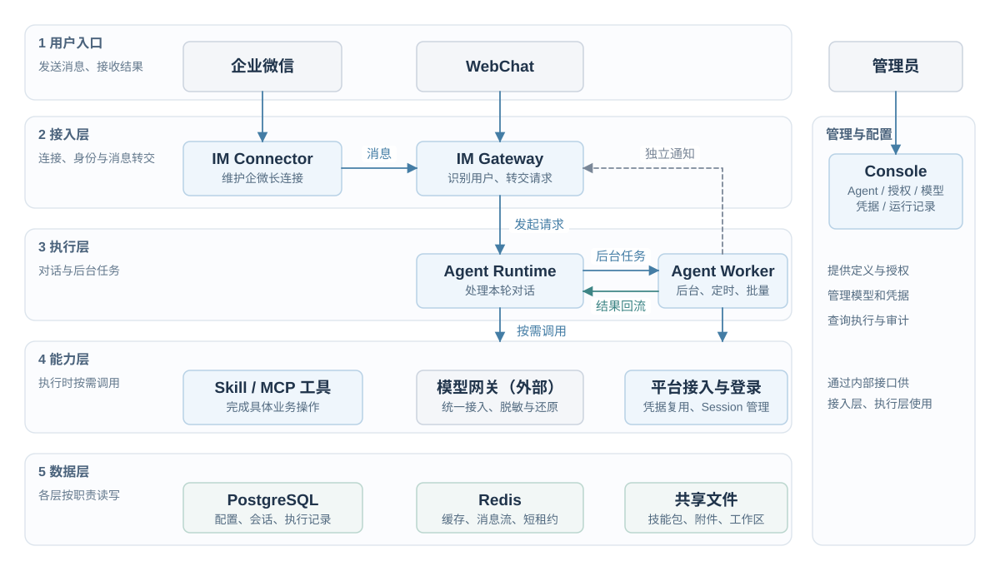
先沿蓝色箭头看“入口 → 接入 → 执行”；需要后台处理时，从 Runtime 转给 Worker，结果沿绿色箭头回来。执行层按需调用下方能力，各层按职责访问数据。能力层的工具、平台接入和模型访问是内部能力，不是新增部署服务。
模块依赖关系
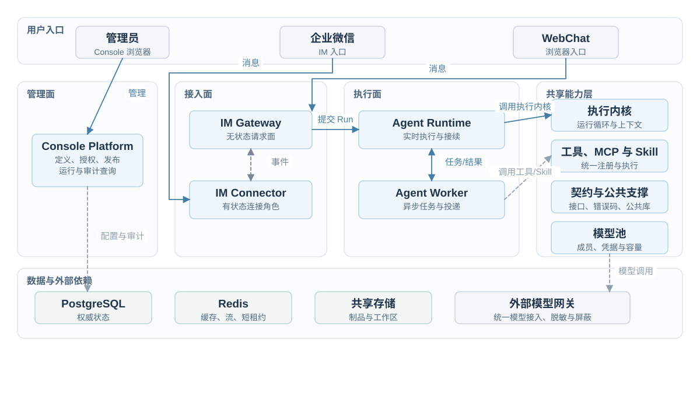
用户入口分管理与业务两类；管理面只提供定义、授权与查询；接入面把请求交给执行面；执行面复用共享能力层，模型请求经模型池调用外部模型网关；数据与外部依赖只作为被访问方。
>
> 共享能力层中的“执行内核”指 Agent Core 的运行循环、上下文与工具调用；“工具、MCP 与 Skill”指统一注册与执行规则；“契约与公共支撑”指跨模块接口、错误码和公共库。它们不是独立部署单元。
开通与绑定
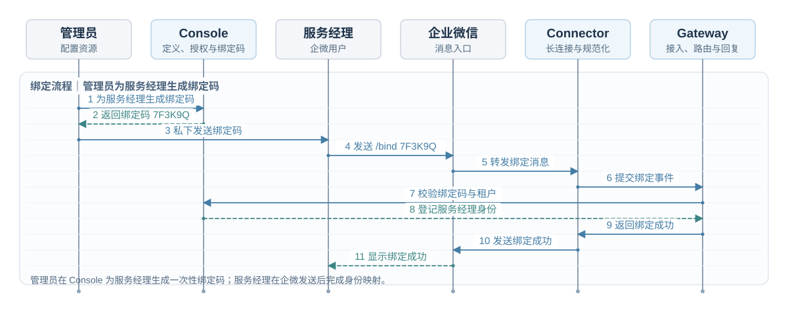
管理员在 Console 为服务经理生成绑定码，并私下发给服务经理；服务经理在企微发送 /bind 后，Connector 只做连接与规范化，Gateway 负责接入和回复，Console 负责校验与登记。绑定流程不经过模型。
对话请求生命周期
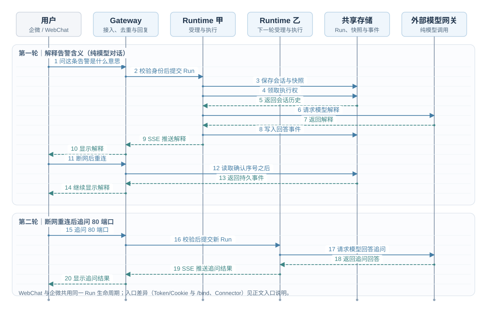
第一轮是纯模型对话：用户问告警含义，Runtime 调用外部模型网关并输出解释，不调用 Skill、MCP 或工具。第二轮演示断网重连后的追问：重连只按序号回放持久事件，不重建 Run；下一轮可以由另一个实例执行。
同步 Skill 执行
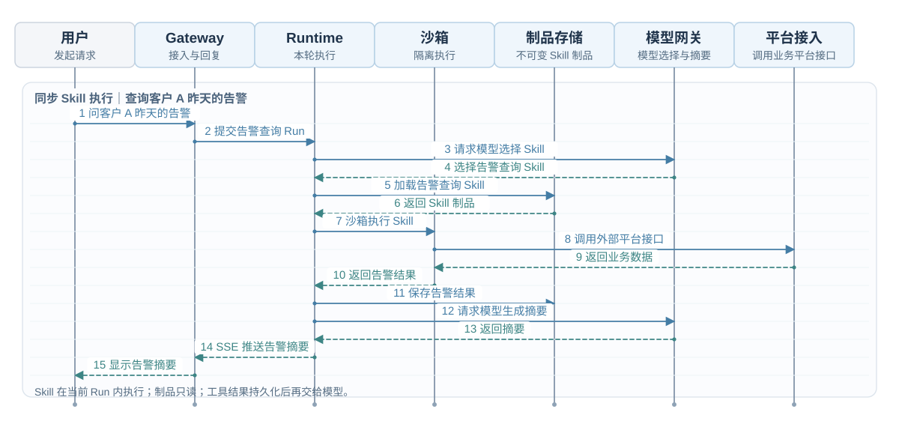
模型只负责选择 Skill；Runtime 负责加载制品、在沙箱执行、持久化结果和继续推理。沙箱内的 Skill 通过平台接入访问业务平台，模型请求经外部模型网关脱敏与还原。同步执行在当前 Run 内完成，不创建后台任务。
异步任务与结果回流
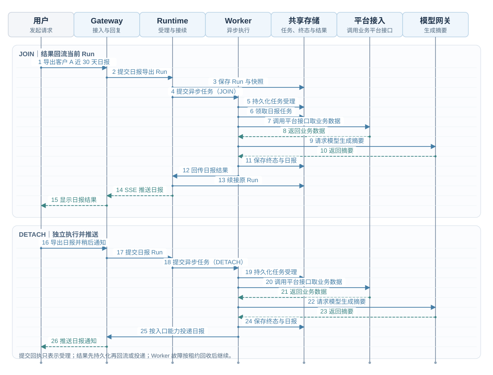
上半部分是 JOIN：Worker 先经平台接入取业务数据，再经模型网关生成摘要，然后把任务结果回传 Runtime，Runtime 续接原 Run 并返回用户。下半部分是 DETACH：Worker 独立完成，只有入口支持 PUSH 时才投递结果；WebChat 结果留在会话或任务中心。
定时与批量任务
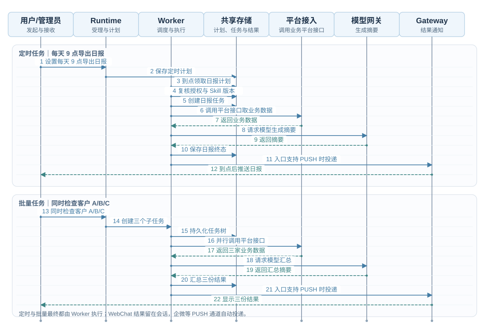
上半部分是定时：每天 9 点领取计划，先复核授权和当前 Skill 版本，再创建任务；执行时经平台接入取业务数据、经模型网关生成摘要；完成后只有入口支持 PUSH 才投递。下半部分是批量：同时检查客户 A、B、C，创建三个子任务，执行后汇总。
取消当前请求与恢复
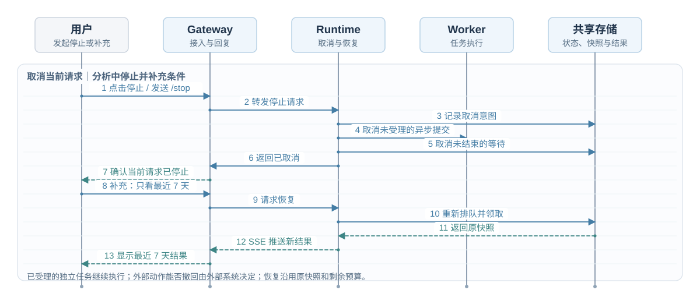
这是 Run 级取消：入口可以是 WebChat 停止按钮或企业微信 /stop。取消先记录意图，再传播到未受理提交和未结束等待；用户补充输入后恢复，沿用原快照和剩余预算。它不是取消定时任务。
Skill 导入与自建
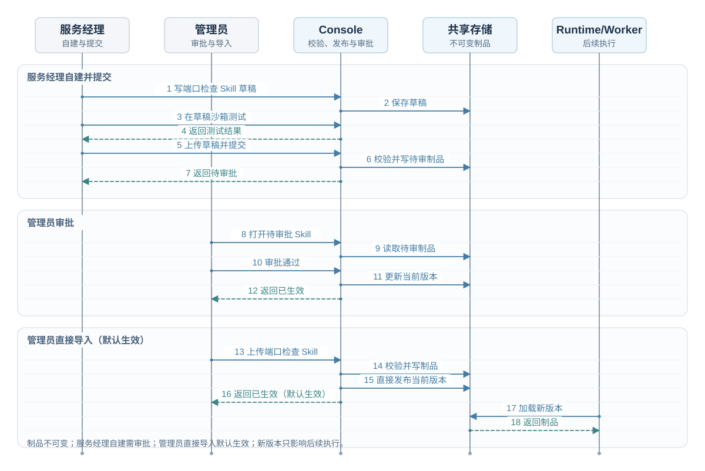
图分三个子流程：服务经理自建并提交、管理员审批、管理员直接导入。审批人就是管理员，不是独立节点；管理员直接导入默认生效。制品不可变，新版本只影响后续执行。
部署拓扑
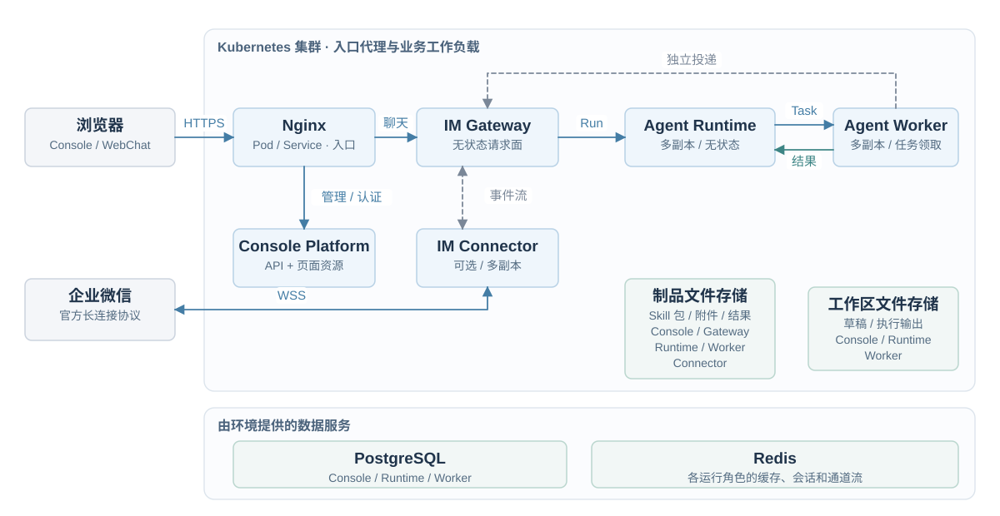
Nginx 与业务工作负载都在 Kubernetes 集群内；浏览器经 Nginx 进入，企业微信通过 WSS 直连 Connector。Runtime 与 Worker 多副本、无状态；Console 单 Pod；Connector 可选并按 Bot 租约分片。PostgreSQL、Redis 和两类共享文件存储由环境提供；数据库由运维脚本提前部署和升级，不作为集群工作负载。两类文件存储不是镜像仓库。
网络拓扑与容量规划
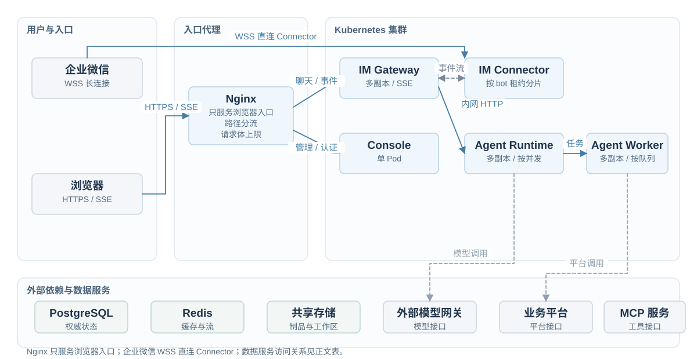
浏览器经 Nginx 进入，按路径把管理、认证、聊天和事件流分流到 Console 或 Gateway；企业微信通过 WSS 直连 Connector，不经过 Nginx。集群内 Runtime 与 Worker 横向扩展；数据库、缓存、外部模型网关和业务平台是外部依赖；MCP 等工具服务经平台接入出站，不单列网络节点。容量规划同时受副本数、连接预算、模型额度和共享存储吞吐约束。